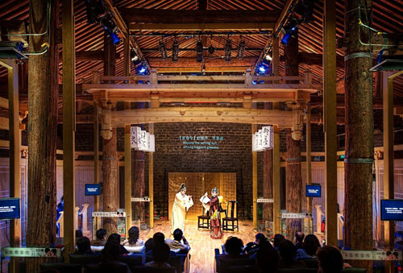
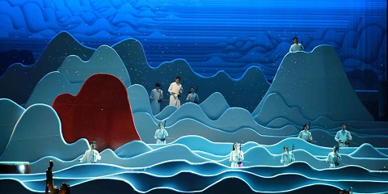
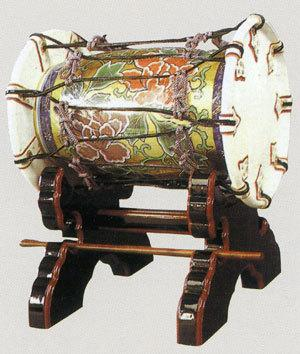
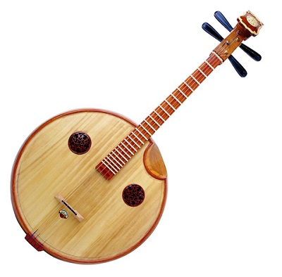

写在《印象国乐》之前
4月27日，由中央民族乐团历时7年打造的大型民族乐舞台剧《印象国乐》将在上海文化广场上演。这是该剧继国家大剧院的首演之后的第二站演出。今年2月份，在央视3台播出的《文化视点》栏目中，总导演王潮歌女士曾率主要演出人员对该剧的来龙去脉做过详细介绍。看完那期节目我相当的感动，也对此剧充满期待。在将进一个月的等待之后终于有机会能一睹该剧真容，颇为激动。在观赏之前感受繁多，胡乱写下观前感。
背景篇——文化的转折
20世纪以来，随着西风东渐，西方中心论在思想文化领域兴起，中国传统文化受到冷落，民族音乐的发展与创新步伐缓慢。本人一度深切地感受到国内传统音乐的发展完全不能与这个日新月异的时代相适应。
许多人也许和我一样醉心于喜多郎的《丝绸之路》和Pacific Moon等中国风New age。 我至今都很好奇为什么像喜多郎、京田诚一这样的日本音乐人能写出这么赋有中国韵味却又充满现代感的乐曲，他们的作品甚至到现在还被国内大量古装影视剧反复地用作插曲。每当我听到NHK纪录片《故宫》的主题曲——由S.E.N.S创作的“故宫之回忆”时，都不禁感叹日本人写出的作品竟能如此准确精妙的表达出故宫六百年的沧桑和厚重感。
喜多郎现场版《响宴》
故宫的记忆
读大学时曾经很痴迷PacificMoon，尤其对其中的《翔》、《葵》等以中国乐器为主打的专辑爱不释耳，在研究了这些专辑的台前幕后之后，赫然发现原来中国有一大批像贾鹏芳、邵容、吴汝俊这样的民族器乐大师东渡日本，在日本更上层楼，并迎来在艺术事业上的巅峰。他们的作品向国人展现了民族音乐的不同面相。在接触了这些以中国元素为主的日本new age以后，我很疑惑为什么中国传统音乐长期无法在新的时代背景下结出具有新鲜感的果实。
贾鹏芳赴日20周年纪念音乐会上演奏的《宁月》，京田诚一作曲
绍荣在和平之月专辑《葵》中的《Wild Rose》
好在近年来，随着国力提升，国人丢失的文化自信被逐步找回，中国民族音乐的发展出现了新的面貌。国内许多民族音乐人开始了对传统音乐呈现方式的思索，探讨，实践和创新。在戏曲界出现了像《皇家粮仓》厅堂版昆曲这样既叫好又叫座的小剧场，储兰兰新世纪风格的《新京剧》专辑。器乐表演上出现了冯晓泉，曾格格所倡导的“新民乐”。声乐上甚至有像龚琳娜这样的怪咖神曲。且不论大众的接受程度如何，民族音乐至少展现了它本应具有的多元呈现方式。

皇家粮仓厅堂版本牡丹亭
储兰兰的新京剧《霸王别姬》
储兰兰的新京剧《贵妃醉酒》
在现场表演领域近年来最值得称道的莫过于由铁三角张艺谋，王潮歌，樊跃共同执导的印象系列。 《印象西湖》，《印象丽江》，《印象大红袍》，《印象刘三姐》等一系列佳作利用实人实景结合声光电N位一体的舞台元素，营造出或典雅或磅礴的艺术氛围，堪称难得的大手笔。他们不仅撬动了以传统文化为载体的巨大文化市场，更开辟出了一条新时期传统艺术发展的新路。
印象西湖剧照

印象丽江剧照
张靓颖，喜多郎现场版-印象西湖雨
在这个大的趋势与背景下，作为中国民族音乐最高艺术殿堂的中央民族乐团自然无法自外，唯有突破传统的窠臼，推陈出新，才能引领传统音乐的发展。于是从2007年开始，中央民族乐团以敦煌壁画中复原的古乐器为主题，经过6年的精心策划与磨砺，完成了堪称鸿篇巨制的民族乐舞台剧《印象国乐》，并于2013年8曰在国家大剧院如期上演。该剧的总导演正是“印象铁三角”之一的王潮歌。据王潮歌讲述，由于对民族音乐理解不够深刻，她起初并不愿意担任导演。但是在接触了中央民族乐团团长席强，以及各位器乐演奏家之后，她被大家渴望复兴民族文化的强烈热情和责任感所感染，最终决定以一元钱的报酬担任总导演一职。她希望通过自己和艺术家们的共同努力，来唤回国人的文化认同和民族自信，促进民族音乐的推广和继承。

《印象国乐》首演剧照
历史篇——听千年之音，品汉风唐韵
中国传统民族音乐在中国大陆被称为民乐，在台湾被称为国乐，在东南亚地区被称为华乐。这表明在不同的华人地区对中国传统音乐内涵的理解是不同的。我总是认为民乐一词显得有些狭隘，国乐这个称呼才更能真正体现民族音乐应有的格局、气度和文化内涵。 相信在观看了4曰26日和27日上海文化广场的《印象国乐》上海站演出后，我会进一步肯定了我的这一看法。下面就《印象国乐》的台前幕后尝试做一些整理。
提起民乐，大家首先会想到的场景很可能是行乞者手中悲催嘶鸣的二胡，农村红白喜事上刺耳尖叫的唢呐。然而当按下历史的后退键，穿越至千年以前，金石丝竹一定是雅到爆表，酷到掉渣的事物。从帝王士大夫到文人骚客再到山林隐士，无不把金石丝竹作为追求精神世界的重要方式。 在富足强大的汉唐，雅致安逸的宋代，许多封建帝王甚至是制作乐器和演奏乐器的高手。
根据《宋书.乐志》记载，宋太宗赵匡义不仅是一位杰出的作曲家还是一位演奏家，他甚至亲手制作阮，将阮的形制从四弦更改为五弦，用于独奏和合奏，并谱写了148首阮曲，广为流传。《旧唐书》和《新唐书·礼乐志》记载，唐玄宗李隆基精通音律，他的词曲不仅高产，而且创作在同时代全世界范围内都中堪称极品，他创作的《凌波曲》，《雨霖铃》，《霓裳羽衣曲》等著名乐曲虽然大部分已失传，但仍然有少量曲目的片段通过各种形式流传至今。他擅长的乐器相当多，尤其擅长玉笛和羯鼓演奏，唐南卓在《羯鼓录》中曾评价他的演奏“若制作曲词，随音即成，不立章度，取适短长，皆应散声，皆中点拍”，由此可见，玄宗对打击乐演奏颇有造诣。玄宗开创开元盛世，历经安史之乱，马嵬坡之变，做了6年的苦闷的太上皇，历史对他的评价毁誉参半。然而对于中国的文化艺术的发展而言，唐玄宗绝对做出了巨大的贡献。他设立“鼓吹署”这样的专属行政机构，从事宫廷礼仪活动的管理。建立“梨园”进行音乐人才选拔，这成为了“梨园子弟”一词的由来。成立“大乐署”进行乐工考核官方机构，扩充“教坊”这样的音乐教育机构进行各类乐器的教学，其涵盖的乐器之广见诸于大量的史料文献中。

羯鼓

阮
曾经有学者以《全唐诗》为对象，对唐代乐器进行分门别类的研究，其中描写弹拨乐器的唐诗有301首，涉及吹奏类乐器的有138首，打击类乐器60首。涵盖的乐器包含近百种。如果把这个这些乐器组成一个乐团，其形制远远超过今天的民乐团。除乐器之外，唐代的音乐理论也达到了一个高峰。唐代出现的二十八调理论框架作为宫廷记调体系一直沿用至清末。唐代创立的减字谱作为古琴记谱法一直沿用至近代，工尺谱则广泛传播于日本，琉球，朝鲜，越南等汉字文化圈。
然而，历经千年时光，大量古代乐器或失传或形变。唐以后的器乐发展更加注重音色的独特性，许多乐器因音色相近而逐步淹没在历史的长河中。古瑟音色与琴相似以致琴瑟和鸣成为绝响，古排箫也因与洞箫音色相似而失传，甚至连滥竽充数的竽也失传。缶，筑，箜篌等古籍大量描述的古乐器因各种原因而消失。后世只能通过古代文献对它们生动描绘进行想象。
随着近代考古的发展，许多失传的金石之器从墓葬中重见天日，后人终于能够一窥古乐器之貌，甚至有机会聆听祖先听过的金石之声。然而丝竹管乐，因本身材质原因很难找到实物。如何还原这些古乐器成为了许多考古学家和音乐家棘手的课题。所幸记录中华5千年璀璨文明史的不仅仅只有文字，大量的古画直观的记录了古代乐器的外观形态。
敦煌莫高窟始建于前秦十六国，隋唐进入全盛时期，到元代为止，历经了1700余年的修建。元以后随着丝绸之路的衰落而淡出了人们的视线。莫高窟以精美的彩绘壁画著称，其中又以唐代壁画的精美程度为最。而在唐代壁画中大量的佛教壁画都记录了当时乐器的外观和形态，这为当代研究人员还原这些乐器提供了绝佳的一手素材。
敦煌壁画中的中国古乐器
敦煌艺术研究院的研究员庄壮先生，倾注40余年的研究心血，致力于敦煌壁画乐器的复原工作。他的古乐器复原之路充满艰辛，敦煌乐器的复制并非简单依瓢画葫芦，除了对外观的要求，还原乐器的必须达到上佳演奏效果，体现当时的历史情境。经过和中央民族乐团几上海民族乐器生产厂商的合作努力，终于复原出65项共计74件敦煌乐器。而《印象国乐》正是这些研究成果的集中展示。令人遗憾的是庄壮先生并未等到《印象国乐》在国家大剧院的首演就因心脏病与世长辞。
国乐承载着我们民族的基因，而民族乐器则是国乐的灵魂。希望当代能有更多的孩子学习民族乐器，传承民族音乐，让千年以后的人们还能听到千年以前的中国乐器发出的声音。